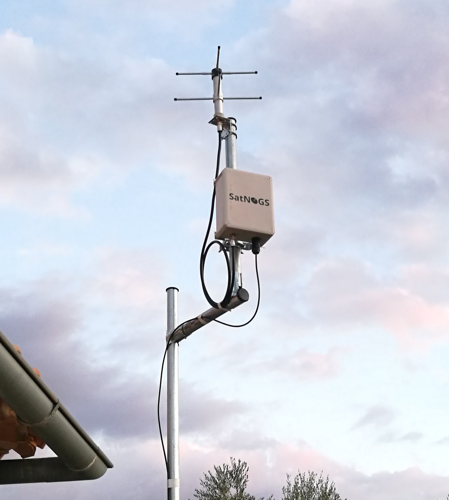

A rose window is often used as a generic term applied to a circular window, but is especially used for those divided into segments by stone mullions and tracery, with simple spokes radiating from a central opening.
The Open Space Observatory work for The Future Starts Here exhibition provides a view into data received by the open source satellite ground station network, SatNOGS. With over 20 stations distributed globally, the decentralized network of ground stations submits satellite telemetry and meterological data to a standardized, open platform.
The installation captures real-time data from the constellation of Low Earth orbit satellites tracked by the ground stations—a decentralized window into critical and newly accessible infrastructure.
The Open Space Observatory installation is by Louis Center, Isha Kasliwal, Kei Kreutler, Cory Levinson, and Édouard A. Urcades.
The accompanying SatNOGS, located on the roof of the Victoria & Albert Museum, London, UK, was installed by the SatNOGS (Libre Space Foundation) team.
This work was commissioned by the Victoria & Albert Museum, London, UK. Special thanks to all involved in the concept development and installation.